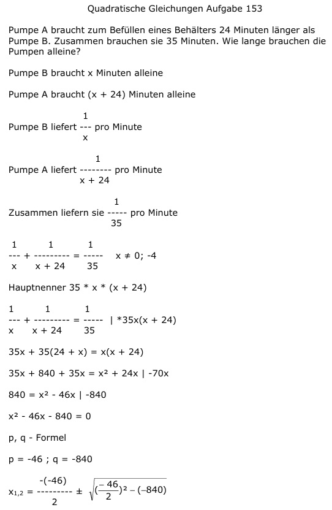

Aufgabe 153 Pumpe A braucht zum Befüllen eines Behälters 24 Minuten länger als Pumpe B. Zusammen brauchen sie 35 Minuten. Wie lange brauchen die Pumpen alleine? Pumpe B braucht x Minuten alleine Pumpe A braucht (x + 24) Minuten alleine 1 Pumpe B liefert --- pro Minute x 1 Pumpe A liefert -------- pro Minute x + 24 1 Zusammen liefern sie ----- pro Minute 35 1 1 1 --- + -------- = ---- x ≠ 0; -4 x x + 24 35 Hauptnenner 35 * x * (x + 24) 1 1 1 --- + -------- = ---- | *35x(x + 24) x x + 24 35 35x + 35(24 + x) = x(x + 24) 35x + 840 + 35x = x2 + 24x |-70x 840 = x2 - 46x | -840 x2 - 46x - 840 = 0 p, q - Formel p = -46 ; q = -840  x1,2 = 23 ± 37 x1 = 23 + 37 = = 60 min braucht Pumpe B alleine Pumpe A braucht 60 min + 24 min = 84 min x2 = 23 - 37 = -14 keine Lösung, negative Zeit